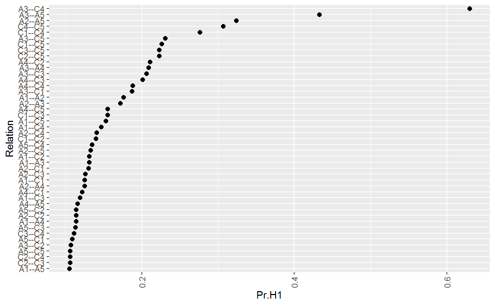
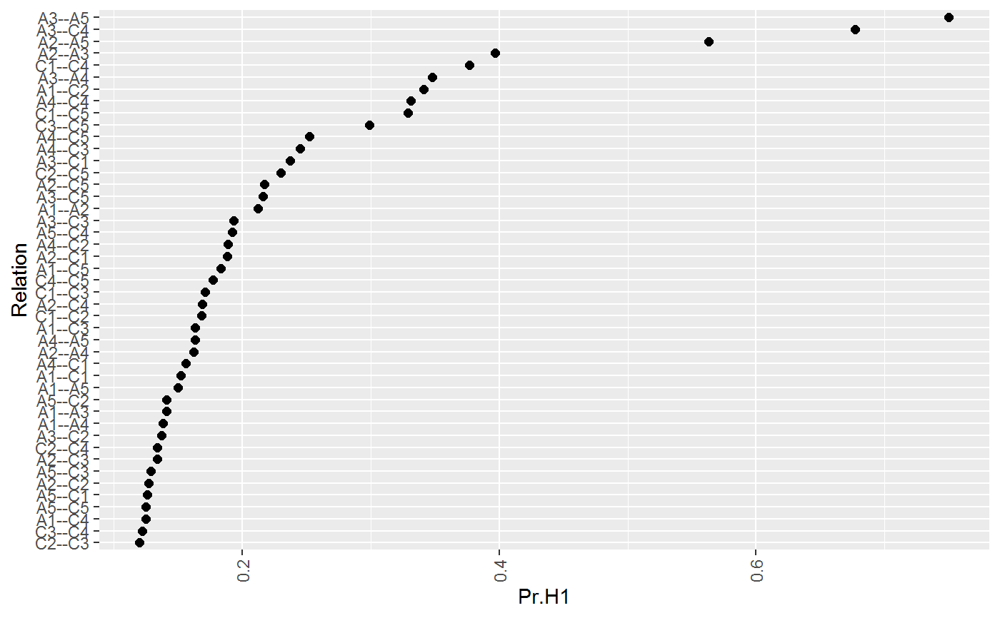
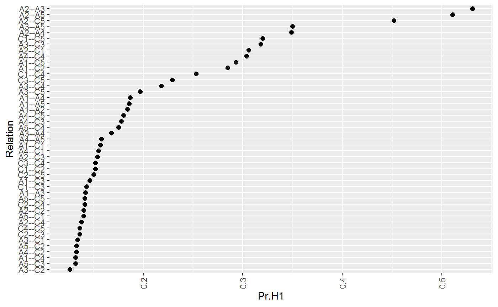

ggm_compare_explore.RdCompare Gaussian graphical models with exploratory hypothesis testing using the matrix-F prior
distribution (Mulder and Pericchi 2018)
. A test for each partial correlation in the model for any number
of groups. This provides evidence for the null hypothesis of no difference and the alternative hypothesis
of difference. With more than two groups, the test is for all groups simultaneously (i.e., the relation
is the same or different in all groups). This method was introduced in Williams et al. (2020)
.
For confirmatory hypothesis testing see confirm_groups.
ggm_compare_explore( ..., formula = NULL, type = "continuous", mixed_type = NULL, analytic = FALSE, prior_sd = 0.2, iter = 5000, progress = TRUE, seed = 1 )
| ... | At least two matrices (or data frame) of dimensions n (observations) by p (variables). |
|---|---|
| formula | An object of class |
| type | Character string. Which type of data for |
| mixed_type | Numeric vector. An indicator of length p for which varibles should be treated as ranks.
(1 for rank and 0 to assume normality). The default is currently (dev version) to treat all integer variables
as ranks when |
| analytic | logical. Should the analytic solution be computed (default is |
| prior_sd | Numeric. The scale of the prior distribution (centered at zero), in reference to a beta distribtuion. The `default` is 0.20. See note for further details. |
| iter | number of iterations (posterior samples; defaults to 5000). |
| progress | Logical. Should a progress bar be included (defaults to |
| seed | An integer for the random seed. |
The returned object of class ggm_compare_explore contains a lot of information that
is used for printing and plotting the results. For users of BGGM, the following
are the useful objects:
BF_01 A p by p matrix including
the Bayes factor for the null hypothesis.
pcor_diff A p by p matrix including
the difference in partial correlations (only for two groups).
samp A list containing the fitted models (of class explore) for each group.
Controlling for Variables:
When controlling for variables, it is assumed that Y includes only
the nodes in the GGM and the control variables. Internally, only the predictors
that are included in formula are removed from Y. This is not behavior of, say,
lm, but was adopted to ensure users do not have to write out each variable that
should be included in the GGM. An example is provided below.
Mixed Type:
The term "mixed" is somewhat of a misnomer, because the method can be used for data including only continuous or only discrete variables. This is based on the ranked likelihood which requires sampling the ranks for each variable (i.e., the data is not merely transformed to ranks). This is computationally expensive when there are many levels. For example, with continuous data, there are as many ranks as data points!
The option mixed_type allows the user to determine which variable should be treated as ranks
and the "emprical" distribution is used otherwise. This is accomplished by specifying an indicator
vector of length p. A one indicates to use the ranks, whereas a zero indicates to "ignore"
that variable. By default all integer variables are handled as ranks.
Dealing with Errors:
An error is most likely to arise when type = "ordinal". The are two common errors (although still rare):
The first is due to sampling the thresholds, especially when the data is heavily skewed.
This can result in an ill-defined matrix. If this occurs, we recommend to first try
decreasing prior_sd (i.e., a more informative prior). If that does not work, then
change the data type to type = mixed which then estimates a copula GGM
(this method can be used for data containing only ordinal variable). This should
work without a problem.
The second is due to how the ordinal data are categorized. For example, if the error states
that the index is out of bounds, this indicates that the first category is a zero. This is not allowed, as
the first category must be one. This is addressed by adding one (e.g., Y + 1) to the data matrix.
"Default" Prior:
In Bayesian statistics, a default Bayes factor needs to have several properties. I refer interested users to section 2.2 in Dablander et al. (2020) . In Williams and Mulder (2019) , some of these propteries were investigated, such model selection consistency. That said, we would not consider this a "default" Bayes factor and thus we encourage users to perform sensitivity analyses by varying the scale of the prior distribution.
Furthermore, it is important to note there is no "correct" prior and, also, there is no need to entertain the possibility of a "true" model. Rather, the Bayes factor can be interpreted as which hypothesis best (relative to each other) predicts the observed data (Section 3.2 in Kass and Raftery 1995) .
Interpretation of Conditional (In)dependence Models for Latent Data:
See BGGM-package for details about interpreting GGMs based on latent data
(i.e, all data types besides "continuous")
Dablander F, Bergh Dvd, Ly A, Wagenmakers E (2020).
“Default Bayes Factors for Testing the (In) equality of Several Population Variances.”
arXiv preprint arXiv:2003.06278.
Kass RE, Raftery AE (1995).
“Bayes Factors.”
Journal of the American Statistical Association, 90(430), 773--795.
Mulder J, Pericchi L (2018).
“The Matrix-F Prior for Estimating and Testing Covariance Matrices.”
Bayesian Analysis, 1--22.
ISSN 19316690, doi: 10.1214/17-BA1092
.
Williams DR, Mulder J (2019).
“Bayesian Hypothesis Testing for Gaussian Graphical Models: Conditional Independence and Order Constraints.”
PsyArXiv.
doi: 10.31234/osf.io/ypxd8
.
Williams DR, Rast P, Pericchi LR, Mulder J (2020).
“Comparing Gaussian graphical models with the posterior predictive distribution and Bayesian model selection.”
Psychological Methods.
# \donttest{ # note: iter = 250 for demonstrative purposes # data Y <- bfi # males and females Ymale <- subset(Y, gender == 1, select = -c(gender, education))[,1:10] Yfemale <- subset(Y, gender == 2, select = -c(gender, education))[,1:10] ############################# ### example 1: continuous ### ############################# # fit model fit <- ggm_compare_explore(Ymale, Yfemale, iter = 250, type = "continuous")#>#>#>#>#>#>#> BGGM: Bayesian Gaussian Graphical Models #> --- #> Type: continuous #> Formula: #> Posterior Samples: 250 #> Observations (n): #> Group 1: 867 #> Group 2: 1765 #> Variables (p): 10 #> Relations: 45 #> Delta: 24 #> --- #> Call: #> ggm_compare_explore(Ymale, Yfemale, type = "continuous", iter = 250) #> --- #> Hypotheses: #> H0: rho_g1 = rho_g2 #> H1: rho_g1 - rho_g2 = 0 #> --- #> #> Relation Post.mean Post.sd Pr.H0 Pr.H1 #> A1--A2 0.042 0.037 0.824 0.176 #> A1--A3 -0.026 0.044 0.869 0.131 #> A2--A3 -0.040 0.036 0.828 0.172 #> A1--A4 0.017 0.042 0.886 0.114 #> A2--A4 -0.019 0.045 0.875 0.125 #> A3--A4 0.052 0.042 0.791 0.209 #> A1--A5 0.005 0.041 0.895 0.105 #> A2--A5 0.068 0.041 0.676 0.324 #> A3--A5 0.072 0.037 0.567 0.433 #> A4--A5 -0.014 0.043 0.884 0.116 #> A1--C1 -0.024 0.043 0.875 0.125 #> A2--C1 -0.027 0.042 0.870 0.130 #> A3--C1 0.048 0.041 0.813 0.187 #> A4--C1 0.020 0.043 0.878 0.122 #> A5--C1 0.000 0.042 0.891 0.109 #> A1--C2 -0.028 0.044 0.869 0.131 #> A2--C2 0.008 0.044 0.886 0.114 #> A3--C2 -0.009 0.041 0.893 0.107 #> A4--C2 0.052 0.041 0.789 0.211 #> A5--C2 0.012 0.043 0.886 0.114 #> C1--C2 0.029 0.041 0.860 0.140 #> A1--C3 0.023 0.042 0.881 0.119 #> A2--C3 0.023 0.042 0.874 0.126 #> A3--C3 -0.053 0.043 0.794 0.206 #> A4--C3 0.051 0.042 0.799 0.201 #> A5--C3 0.004 0.044 0.887 0.113 #> C1--C3 0.038 0.042 0.845 0.155 #> C2--C3 -0.007 0.041 0.894 0.106 #> A1--C4 0.034 0.044 0.853 0.147 #> A2--C4 0.034 0.042 0.859 0.141 #> A3--C4 0.093 0.039 0.370 0.630 #> A4--C4 -0.048 0.042 0.812 0.188 #> A5--C4 -0.030 0.044 0.865 0.135 #> C1--C4 0.064 0.042 0.724 0.276 #> C2--C4 0.006 0.040 0.894 0.106 #> C3--C4 0.005 0.043 0.889 0.111 #> A1--C5 -0.038 0.042 0.847 0.153 #> A2--C5 -0.031 0.041 0.867 0.133 #> A3--C5 0.057 0.042 0.769 0.231 #> A4--C5 0.038 0.043 0.845 0.155 #> A5--C5 0.001 0.041 0.894 0.106 #> C1--C5 -0.054 0.040 0.774 0.226 #> C2--C5 0.055 0.040 0.777 0.223 #> C3--C5 0.055 0.042 0.777 0.223 #> C4--C5 0.060 0.037 0.693 0.307 #> ---#> BGGM: Bayesian Gaussian Graphical Models #> --- #> Type: continuous #> Posterior Samples: 250 #> Observations (n): #> Group 1: 867 #> Group 2: 1765 #> Variables (p): 10 #> Relations: 45 #> Delta: 24 #> --- #> Call: #> ggm_compare_explore(Ymale, Yfemale, type = "continuous", iter = 250) #> --- #> Hypotheses: #> H0: rho_g1 = rho_g2 #> H1: rho_g1 - rho_g2 = 0 #> --- #> #> Partial Correlations: #> #> 1 2 3 4 5 6 7 8 9 10 #> 1 0 0 0 0 0 0 0 0 0 0 #> 2 0 0 0 0 0 0 0 0 0 0 #> 3 0 0 0 0 0 0 0 0 0 0 #> 4 0 0 0 0 0 0 0 0 0 0 #> 5 0 0 0 0 0 0 0 0 0 0 #> 6 0 0 0 0 0 0 0 0 0 0 #> 7 0 0 0 0 0 0 0 0 0 0 #> 8 0 0 0 0 0 0 0 0 0 0 #> 9 0 0 0 0 0 0 0 0 0 0 #> 10 0 0 0 0 0 0 0 0 0 0 #> --- #> Adjacency: #> #> 1 2 3 4 5 6 7 8 9 10 #> 1 0 0 0 0 0 0 0 0 0 0 #> 2 0 0 0 0 0 0 0 0 0 0 #> 3 0 0 0 0 0 0 0 0 0 0 #> 4 0 0 0 0 0 0 0 0 0 0 #> 5 0 0 0 0 0 0 0 0 0 0 #> 6 0 0 0 0 0 0 0 0 0 0 #> 7 0 0 0 0 0 0 0 0 0 0 #> 8 0 0 0 0 0 0 0 0 0 0 #> 9 0 0 0 0 0 0 0 0 0 0 #> 10 0 0 0 0 0 0 0 0 0 0# plot graph # plot(select(fit)) ########################## ### example 2: ordinal ### ########################## # fit model fit <- ggm_compare_explore(Ymale, Yfemale, type = "ordinal", iter = 250)#>#>#>#>#>#>#> BGGM: Bayesian Gaussian Graphical Models #> --- #> Type: ordinal #> Formula: #> Posterior Samples: 250 #> Observations (n): #> Group 1: 867 #> Group 2: 1765 #> Variables (p): 10 #> Relations: 45 #> Delta: 24 #> --- #> Call: #> ggm_compare_explore(Ymale, Yfemale, type = "ordinal", iter = 250) #> --- #> Hypotheses: #> H0: rho_g1 = rho_g2 #> H1: rho_g1 - rho_g2 = 0 #> --- #> #> Relation Post.mean Post.sd Pr.H0 Pr.H1 #> A1--A2 0.049 0.045 0.788 0.212 #> A1--A3 -0.016 0.051 0.859 0.141 #> A2--A3 -0.079 0.046 0.603 0.397 #> A1--A4 0.015 0.050 0.862 0.138 #> A2--A4 -0.033 0.048 0.838 0.162 #> A3--A4 0.072 0.043 0.652 0.348 #> A1--A5 0.026 0.050 0.850 0.150 #> A2--A5 0.096 0.046 0.437 0.563 #> A3--A5 0.096 0.039 0.250 0.750 #> A4--A5 -0.037 0.045 0.837 0.163 #> A1--C1 -0.031 0.048 0.848 0.152 #> A2--C1 -0.045 0.046 0.812 0.188 #> A3--C1 0.057 0.047 0.763 0.237 #> A4--C1 0.032 0.048 0.844 0.156 #> A5--C1 -0.005 0.046 0.874 0.126 #> A1--C2 -0.073 0.046 0.659 0.341 #> A2--C2 -0.002 0.047 0.873 0.127 #> A3--C2 -0.020 0.047 0.863 0.137 #> A4--C2 0.044 0.045 0.811 0.189 #> A5--C2 0.024 0.047 0.859 0.141 #> C1--C2 0.035 0.040 0.832 0.168 #> A1--C3 0.038 0.042 0.837 0.163 #> A2--C3 0.017 0.046 0.866 0.134 #> A3--C3 -0.047 0.044 0.807 0.193 #> A4--C3 0.059 0.044 0.755 0.245 #> A5--C3 -0.004 0.048 0.871 0.129 #> C1--C3 0.037 0.049 0.829 0.171 #> C2--C3 -0.006 0.042 0.880 0.120 #> A1--C4 0.004 0.044 0.875 0.125 #> A2--C4 0.038 0.047 0.831 0.169 #> A3--C4 0.108 0.047 0.323 0.677 #> A4--C4 -0.071 0.044 0.669 0.331 #> A5--C4 -0.047 0.049 0.808 0.192 #> C1--C4 0.078 0.047 0.623 0.377 #> C2--C4 0.012 0.047 0.866 0.134 #> C3--C4 -0.012 0.041 0.878 0.122 #> A1--C5 -0.043 0.048 0.817 0.183 #> A2--C5 -0.054 0.048 0.783 0.217 #> A3--C5 0.053 0.044 0.784 0.216 #> A4--C5 0.061 0.046 0.748 0.252 #> A5--C5 -0.001 0.046 0.875 0.125 #> C1--C5 -0.074 0.047 0.671 0.329 #> C2--C5 0.057 0.048 0.770 0.230 #> C3--C5 0.067 0.044 0.701 0.299 #> C4--C5 0.034 0.038 0.823 0.177 #> ---#> BGGM: Bayesian Gaussian Graphical Models #> --- #> Type: ordinal #> Posterior Samples: 250 #> Observations (n): #> Group 1: 867 #> Group 2: 1765 #> Variables (p): 10 #> Relations: 45 #> Delta: 24 #> --- #> Call: #> ggm_compare_explore(Ymale, Yfemale, type = "ordinal", iter = 250) #> --- #> Hypotheses: #> H0: rho_g1 = rho_g2 #> H1: rho_g1 - rho_g2 = 0 #> --- #> #> Partial Correlations: #> #> 1 2 3 4 5 6 7 8 9 10 #> 1 0 0 0 0 0 0 0 0 0 0 #> 2 0 0 0 0 0 0 0 0 0 0 #> 3 0 0 0 0 0 0 0 0 0 0 #> 4 0 0 0 0 0 0 0 0 0 0 #> 5 0 0 0 0 0 0 0 0 0 0 #> 6 0 0 0 0 0 0 0 0 0 0 #> 7 0 0 0 0 0 0 0 0 0 0 #> 8 0 0 0 0 0 0 0 0 0 0 #> 9 0 0 0 0 0 0 0 0 0 0 #> 10 0 0 0 0 0 0 0 0 0 0 #> --- #> Adjacency: #> #> 1 2 3 4 5 6 7 8 9 10 #> 1 0 0 0 0 0 0 0 0 0 0 #> 2 0 0 0 0 0 0 0 0 0 0 #> 3 0 0 0 0 0 0 0 0 0 0 #> 4 0 0 0 0 0 0 0 0 0 0 #> 5 0 0 0 0 0 0 0 0 0 0 #> 6 0 0 0 0 0 0 0 0 0 0 #> 7 0 0 0 0 0 0 0 0 0 0 #> 8 0 0 0 0 0 0 0 0 0 0 #> 9 0 0 0 0 0 0 0 0 0 0 #> 10 0 0 0 0 0 0 0 0 0 0######################### ### example 3: mixed ### ######################### # fit model fit <- ggm_compare_explore(Ymale, Yfemale, type = "mixed", iter = 250)#>#>#>#>#>#>#> BGGM: Bayesian Gaussian Graphical Models #> --- #> Type: mixed #> Formula: #> Posterior Samples: 250 #> Observations (n): #> Group 1: 867 #> Group 2: 1765 #> Variables (p): 10 #> Relations: 45 #> Delta: 24 #> --- #> Call: #> ggm_compare_explore(Ymale, Yfemale, type = "mixed", iter = 250) #> --- #> Hypotheses: #> H0: rho_g1 = rho_g2 #> H1: rho_g1 - rho_g2 = 0 #> --- #> #> Relation Post.mean Post.sd Pr.H0 Pr.H1 #> A1--A2 0.042 0.046 0.816 0.184 #> A1--A3 -0.022 0.048 0.858 0.142 #> A2--A3 -0.093 0.048 0.469 0.531 #> A1--A4 -0.043 0.055 0.813 0.187 #> A2--A4 -0.076 0.049 0.651 0.349 #> A3--A4 0.027 0.056 0.832 0.168 #> A1--A5 0.045 0.049 0.814 0.186 #> A2--A5 0.096 0.050 0.489 0.511 #> A3--A5 0.066 0.041 0.650 0.350 #> A4--A5 -0.022 0.056 0.842 0.158 #> A1--C1 -0.030 0.049 0.843 0.157 #> A2--C1 -0.076 0.052 0.694 0.306 #> A3--C1 0.012 0.050 0.866 0.134 #> A4--C1 0.029 0.051 0.845 0.155 #> A5--C1 0.011 0.052 0.860 0.140 #> A1--C2 -0.069 0.051 0.715 0.285 #> A2--C2 -0.015 0.050 0.860 0.140 #> A3--C2 -0.003 0.046 0.874 0.126 #> A4--C2 0.009 0.048 0.867 0.133 #> A5--C2 0.003 0.049 0.867 0.133 #> C1--C2 0.021 0.044 0.848 0.152 #> A1--C3 0.026 0.048 0.854 0.146 #> A2--C3 -0.027 0.049 0.846 0.154 #> A3--C3 -0.074 0.052 0.682 0.318 #> A4--C3 0.042 0.048 0.822 0.178 #> A5--C3 0.004 0.049 0.868 0.132 #> C1--C3 0.016 0.049 0.857 0.143 #> C2--C3 -0.012 0.048 0.864 0.136 #> A1--C4 -0.012 0.046 0.868 0.132 #> A2--C4 -0.007 0.053 0.862 0.138 #> A3--C4 0.055 0.054 0.782 0.218 #> A4--C4 -0.080 0.062 0.696 0.304 #> A5--C4 -0.039 0.055 0.825 0.175 #> C1--C4 0.062 0.048 0.747 0.253 #> C2--C4 -0.010 0.049 0.859 0.141 #> C3--C4 -0.032 0.046 0.848 0.152 #> A1--C5 -0.069 0.050 0.707 0.293 #> A2--C5 -0.092 0.050 0.548 0.452 #> A3--C5 0.047 0.060 0.803 0.197 #> A4--C5 0.038 0.054 0.820 0.180 #> A5--C5 -0.014 0.053 0.859 0.141 #> C1--C5 -0.073 0.049 0.680 0.320 #> C2--C5 0.028 0.048 0.850 0.150 #> C3--C5 0.057 0.051 0.771 0.229 #> C4--C5 -0.005 0.037 0.864 0.136 #> ---# }